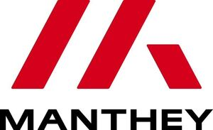

Trade Mark Journal No.2026/012 20 March 2026
WO0000001904550 (7,9,11,12,17,20,21,22,35)
Office of origin: European Union Intellectual Property Office (EUIPO)
Date of International Registration:6 August 2025
Date of designation in the UK:
6 August 2025

The mark contains the colours red and black.
International priority date claimed: 10 February 2025
(European Union Intellectual Property Office (EUIPO))
(019140942)
- Class 7
- Machines for material processing and production, machine tools; motors and engines (except for land vehicles); couplings and devices for power transmission (except for land vehicles); catalytic converters; starters for motors and engines; exhaust manifold for engines; exhausts for motors and engines; self-regulating fuel pumps; fuel conversion apparatus for internal combustion engines; joints [parts of engines]; speed governors for machines, engines and motors; compressed air engines; injectors for engines; generators of electricity; filters [parts of machines or engines]; galvanizing machines; crankcases for machines, motors and engines; glow plugs for diesel engines; hydraulic engines and motors; hydraulic controls for machines, motors and engines; kick starters for motorcycles; pistons [parts of machines or engines]; pistons for engines; piston segments; compressors (superchargers); compressors for cooling systems; fuel dispensing pumps for service stations; fuel economisers for motors and engines; radiators [cooling] for motors and engines; crank shafts; superchargers; filters for cleaning and cooling air, for engines; pneumatic controls for machines, motors and engines; pumps [parts of machines, engines or motors]; mufflers for motors and engines; grease rings [parts of machines]; control mechanisms for machines, engines or motors; control cables for machines, engines or motors; bearings for transmission shafts; belts for motors and engines; turbocompressors; anti-pollution devices for motors and engines; fans for motors and engines; fan belts for motors and engines; carburetters; vulcanization apparatus; jacks [machines]; washing installations for vehicles; tools [parts of machines]; holding devices for machine tools; sparking plugs for internal combustion engines; igniting devices for internal combustion engines; cylinders for motors and engines; pistons for cylinders; cylinder heads for engines; freewheels, other than for land vehicles; connecting rods for machines, motors and engines; gears, other than for land vehicles; gear boxes, other than for land vehicles; gear levers other than for land vehicles; engines and turbines, other than for land vehicles; parts and accessories for all the aforesaid goods, included in this class; air ducting components for drive optimisation of vehicles; machines for extracting, draining, filling and venting vehicle cooling systems; lifting and elevating installations for vehicles; airlift installations for vehicles.
- Class 9
- Software for electronic driving assistance systems; hardware for electronic driving assistance systems; fire extinguishers; measuring instruments and apparatus; air pressure testers; air pressure gauges for vehicle tyres; measuring tables, wheel load scales, measuring wheels, steering wheel balances, measuring adapters, aligner control unit lasers, displays for showing values, in relation to the following goods: vehicles and vehicle parts; storage boxes for meassuring tables, wheel load scales, measuring wheels, steering wheel balances, measuring adapters, aligner control unit lasers, displays for showing values relating to the vehicles and vehicle parts; safety, security, protection and signalling devices; apparatus, instruments and cables for electricity; measuring, detecting and monitoring instruments, indicators and controllers; mobile apps; electronic publications, downloadable; recorded content; spectacles; sunglasses; goggles for sports; spectacle cases; chords for eyeglasses; magnets; decorative magnets; headguards for sports; parts and accessories for all the aforesaid goods, included in this class; electronic LED door projectors; measuring wheel systems; cables and brackets for use with a video system in racing vehicles; virtual vehicles; virtual vehicles authenticated by NFTs; virtual vehicle parts; virtual vehicle parts authenticated by NFTs; virtual vehicle fittings; virtual vehicle fittings authenticated by NFTs.
- Class 11
- Vehicle lighting and lighting reflectors; heating, ventilating and air conditioning installations and apparatus for vehicles; electric blankets; heating tents; heaters for tents; heating apparatus for keeping warm or heating tyres, consisting of heating chambers in the form of a tent and a chimney connected thereto; pocket warmers; electric torches; penlights; parts and accessories for all the aforesaid goods, included in this class.
- Class 12
- Vehicles and means of transport; parts and accessories for all the aforesaid goods, included in this class; powertrains, including engines and motors, for land vehicles; vehicle covers [shaped]; axle boots for vehicles; air bags [safety devices for automobiles]; trailers [vehicles]; trailer hitches for vehicles; apparatus for locomotion by land, air or water; automobile tyres; covers for vehicle steering wheels; balance weights for vehicle wheels; anti-dazzle devices for vehicles; brake systems for land vehicles; brake segments for vehicles; brake pads for automobiles; brake linings for vehicles; brake blocks for vehicles; servobrakes for vehicles; brake calipers for vehicles; brake discs for vehicles; brake hoses for vehicles; brake shoes for vehicles; brake drums for vehicles; vehicle chassis; automobile chassis; anti-theft devices for vehicles; anti-theft alarms for vehicles; torque converters for land vehicles; jet engines for land vehicles; electric vehicles; motors, electric, for land vehicles; vehicle chassis; automobile chassis; signal arms for vehicles; brakes for vehicles; vehicles for locomotion by land, air, water or rail; windows for vehicles; bodies for vehicles; vehicle wheels; vehicle wheel spokes; vehicle tires; vehicle seats; doors for vehicles; hoods for vehicles; rims for vehicle wheels; remote control vehicles, other than toys; repair outfits for inner tubes; freewheels for land vehicles; front and rear skirts for automobiles; front spoilers and rear spoilers for automobiles; foot pedals for vehicles; non-skid devices for vehicle tyres; handbrake levers for vehicles; covers for spare tyres; horns for vehicles; hydraulic circuits for vehicles; upholstery for vehicles; automobile bodies; caissons [vehicles]; automobile chains; head-rests for vehicle seats; mudguards; automotive vehicles; couplings for land vehicles; treads for retreading tyres; casings for pneumatic tyres; mopeds; engines for land vehicles; hoods for vehicle engines; automobile hoods; motorcycles; hubs for vehicle wheels; bands for wheel hubs; connecting rods for land vehicles, other than parts of motors and engines; axles for vehicles; gearing for land vehicles; hub caps; wheel bearings for vehicles; hub caps; reduction gears for land vehicles; tyres for vehicle wheels; pneumatic tyres; reversing alarms for vehicles; rearview mirrors; saddles for bicycles, cycles or motorcycles; gear lever knobs for vehicles; clutches for land vehicles; windshield wipers; headlight wipers; inner tubes for pneumatic tyres; mud flaps; anti-skid chains; seat covers for vehicles; security harness for vehicle seats; safety belts for vehicle seats; sun-blinds adapted for automobiles; spikes for tyres; spoilers for vehicles; sports running gears; sports cars; suspension shock absorbers for vehicles; shock absorbers for automobiles; shock absorbing springs for vehicles; vehicle bumpers; bumpers for automobiles; caps for vehicle fuel tanks; suspension springs for chassis; torsion bars for vehicles; vehicle suspension springs; propulsion mechanisms for land vehicles; turbines for land vehicles; valves for vehicle tyres; undercarriages for vehicles; windscreens; blades for windscreen wipers; wipers for headlights; bicycle motors; cycle stands; tool trolleys; fitted vehicle covers; covers for tyres; vehicle rollers; bottle holders for vehicles; crankcases for components for motor cars (other than for engines); compressors for supercharging internal combustion engines of land vehicles; drive belts for driving land vehicles; parts and accessories for all the aforesaid goods, included in this class; coilovers; carbon aero disc hubcaps; brake cables for vehicles; vehicle underbodies of carbon; rear wings for vehicles of carbon; rear wing panels of carbon; rear wings with side panels; carbon panels for reinforcing the rear wing support area; protective grills for air inflow in vehicles; spray prevention flaps (louvres) of carbon; gurney flaps of carbon; door sill covers; vehicle wheel sets of magnesium; carbon engine covers; drive optimised chassis (diffusers) for vehicles; carbon mounting supports for vehicle parts; wing supports; bow ramps; kits consisting of thread chassis, carbon aero discs, brake pad sets, steel flex line sets, flaps, carbon chassis, air ducting elements, carbon rear wings including end plates, carbon reinforcement for wing supports, carbon louvres, carbon gurneys, protective grill sets for air inflow, tow loops, door entrance covers; kits consisting of thread chassis, magnesium wheel sets, carbon aero discs, brake pad sets, steel flex line sets, water tanks, flaps, carbon chassis, air ducting elements, carbon engine covers, carbon gurneys, carbon mounting supports, wing supports, rear wings including side panels, diffusers; kits consisting of thread chassis, lightweight wheel sets, carbon aero discs, brake pad sets, steel flex line sets, bow ramps, flaps, air ducting elements, carbon rear wings including end plates, diffusers, tow loops, door entrance covers, led door projectors; kits consisting of thread chassis, magnesium wheel sets, carbon aero discs, brake pad sets, steel flex line sets, flaps, carbon engine covers, carbon gurneys, carbon mounting supports, wing supports, rear wings including side panels; kits consisting of thread chassis, lightweight wheel sets, carbon aero discs, brake pad sets, steel flex line sets, bow ramps, air ducting elements, diffusors, tow loops, door entrance covers, led door projectors; creepers for vehicles for facilitating manoeuvres in the narrowest spaces.
- Class 17
- Window films for vehicles, anti-dazzle foils for windows; protective films for front, rear and side windows of vehicles; washer banners; goods of plastic, namely self-adhesive films, fluorescent and phosphorescent films, including being self-adhesive, light reflecting films, including being self-adhesive, reflecting films, including being self-adhesive; parts and accessories for all the aforesaid goods, included in this class.
- Class 20
- Registration plates and registration plate holders, not of metal for vehicles; signs, including nameplates, not of metal; tool boxes and tool chests (empty), not of metal; statues, figurines, trophies and works of art, and ornaments and decorations of materials including wood, wax, plaster or plastic, included in this class; furniture; containers, and closures and holders therefor, non-metallic; inflatable publicity objects; ladders and movable steps, non-metallic; displays, stands and signage, non-metallic; water tanks, not of metal or masonry; parts and accessories for all the aforesaid goods, included in this class; wooden trophies, trophies of plastic.
- Class 21
- Drinking bottles with a drinking tube, in particular those being for use in vehicle-mounted brackets; storage boxes for drinking bottles; storage boxes and drinking bottles sold as a unit; statues, figurines, plaques and works of art, made of materials such as porcelain, terra-cotta or glass, included in the class; tableware, cookware and containers; glasses, drinking vessels and barware; coin banks (piggy banks); combs and sponges; brushes; household cleaning articles; cosmetic and toilet utensils; personal drinking systems, consisting of a drinking bottle, a straw and a drinking tube attached thereto for connection to a drinking system for liquid supply; parts and accessories for all the aforesaid goods, included in this class.
- Class 22
- Ropes and strings; nets; tents, awnings; awnings and unfitted coverings; bags and sacks for packaging, storage and transport; parts and accessories for all the aforesaid goods, included in this class; tow loops for vehicles.
- Class 35
- Advertising, marketing; organisational planning of the use and logistics of vehicles for participation in motor racing events; organization of events, exhibitions, fairs and shows for commercial, promotional and advertising purposes; providing of advertising space, advertising time and advertising media, rental of advertising space, time and materials; organisation of competitions for advertising purposes; administrative assistance, to others in participating in competition with their vehicles, including registering the vehicle for race participation; promoting the goods and services of others, in particular by arranging for sponsors to affiliate their goods and services with sports competitions and sports activities; provision of an online marketplace for buyers and sellers of goods and services; arranging of contracts for the purchase and sale of goods and services, for others; business assistance, management and administrative services; commercial trading and consumer information services, namely organisation of business contacts, commercial evaluation and negotiation, procurement services, for others, subscription services; business analysis, research and information services; compilation, systemization, updating and maintenance of data and information into computer databases; publication of printed matter for advertising purposes; production of videotapes, video discs and audiovisual recordings for promotional and advertising purposes; temporary personnel services; consultancy and information in relation to the aforesaid services, included in this class.
Manthey Racing GmbH
Representative: JONAS RECHTSANWALTSGESELLSCHAFT MBH, Hohenstaufenring 62, 50674 Köln, GERMANY